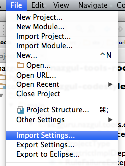
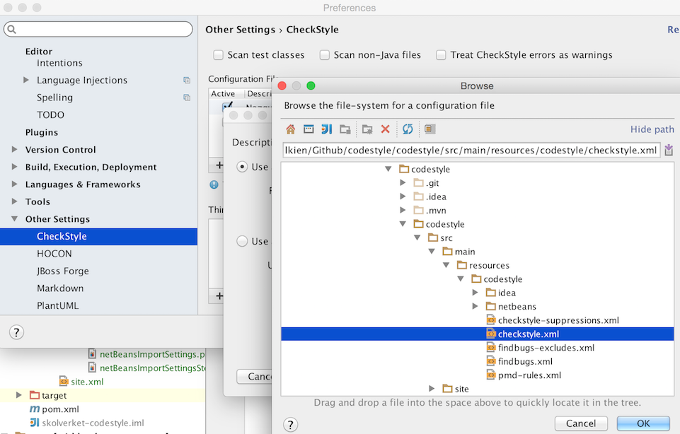

IDE setup: IntelliJ IDEA
For later IntelliJ IDEA versions, setup your IDE by importing the resources/codestyle/idea/settings.jar file from the codestyle project into your IDE, by selecting it from the “Import Settings…” menu.

Active Checkstyle plugin and rules
Following this, you may need to alter the path to the checkstyle configuration within the codestyle project, as illustrated within the image below. You are recommended to install the IDEA-Checkstyle plugin to enable real-time checking of your code. Following the installation of the IDEA-Checkstyle plugin, you can access the checkstyle setting from the IDEA settings menu.
Import the checkstyle rules from the file main/resources/codestyle/checkstyle.xml, as illustrated in the image below.
